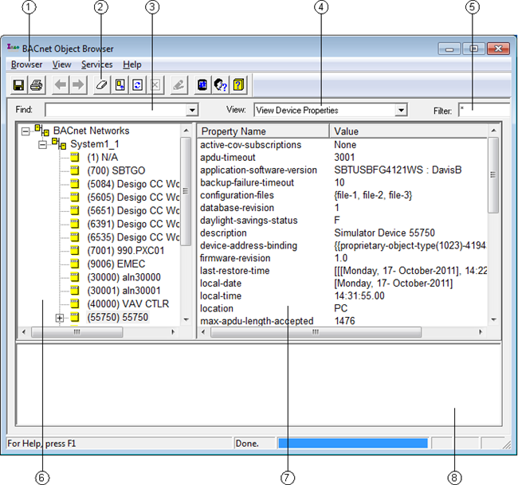

Main Window

| Description |
|---|---|
1 | Menu Items |
2 | Toolbar Buttons |
3 | Find |
4 | View When browsing an item that is in a list format, for example a Recipient List, the BACnet Object Browser indicates how many items are in that list. Double-click the item to expand and view the list. |
5 | Filter |
6 | System Tree |
7 | Data List |
8 | Error / Message |